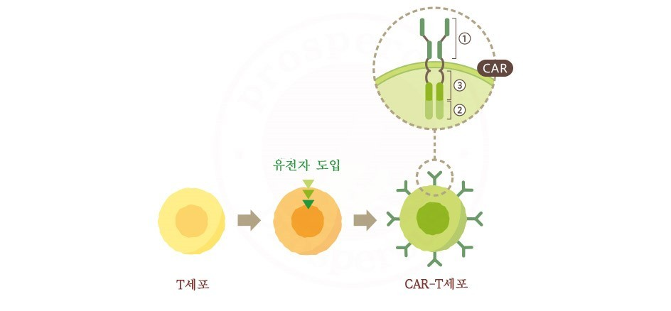

- 유전자 가위
- 줄기세포
- 면역 항암 세포치료제
면역 항암 세포치료제
정의
세포와 조직의 기능을 복원하기 위하여 살아 있는 세포를 체외에서 증식, 선별하거나 여타 방법으로 세포의 생물학적 특성을
변화시키는 등 일련의 행위를 통하여 치료, 진단, 예방 목적으로 사용되는 의약품으로,
사용하는 세포의 종류와 분화정도에 따라 체세포치료제와 줄기세포치료제로 나눌 수 있으며,
줄기세포치료제는 배아줄기세포치료제와 성체줄기세포치료제로 분류한다.
[네이버 지식백과] 세포치료제 [Cell Therapy Products] (지식경제용어사전, 2010. 11., 산업통상자원부)
종류
car-t 세포 치료제
